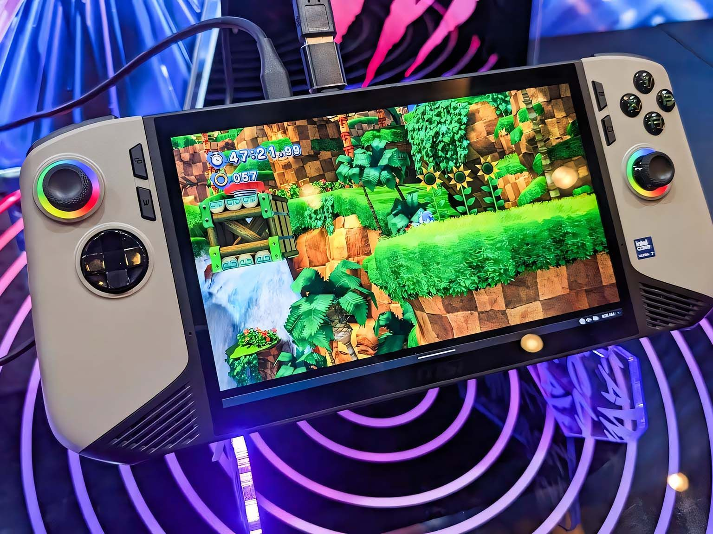
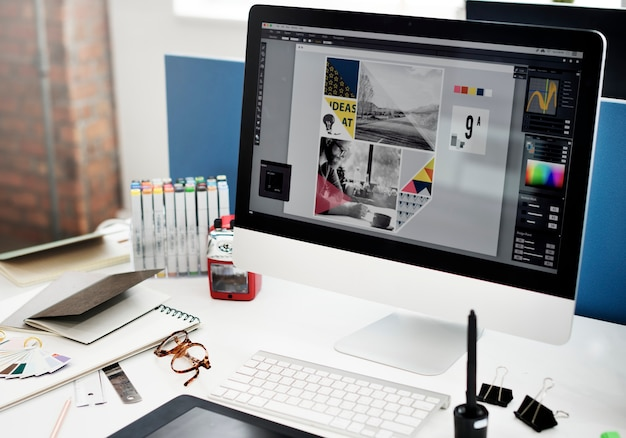

Gaming & Stratégie
J'apprécie les jeux qui demandent de la logique et de la planification. C'est pour moi une autre façon d'exercer mon esprit d'analyse tout en m'amusant.
En dehors de mes études en L2 et du code, j'aime explorer d'autres univers créatifs et stimulants qui nourrissent mon imagination.

J'apprécie les jeux qui demandent de la logique et de la planification. C'est pour moi une autre façon d'exercer mon esprit d'analyse tout en m'amusant.

Utiliser Figma ou Photoshop pour créer des visuels est un véritable exutoire. J'aime l'équilibre entre la rigueur technique et la liberté artistique.
Lire des articles sur l'IA ou les nouvelles architectures logicielles me permet de rester connectée aux innovations qui changeront le monde de demain.